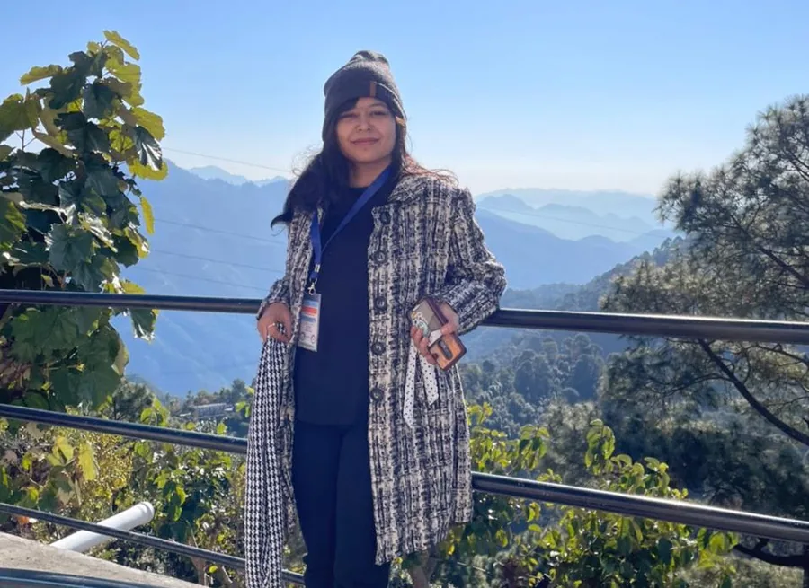
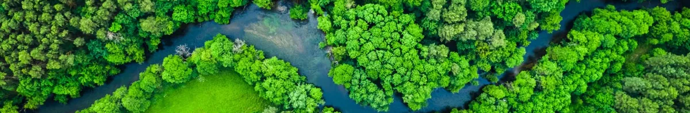

Soil erosion modelling
- Theoretical, statistical and physically based soil erosion modelling
- Landslide susceptibility modelling
- Quantification of river basin erosion and accretion (see the QGIS plugin)
Remote sensing · GIS · Hydrology
Research Associate II, Narmada River Basin Management Studies
Indian Institute of Technology, Indore
Ph.D., NIT Jamshedpur
Project funded by the Ministry of Jal Shakti, National River Conservation Directorate, Government of India

About
Hello there! I am Srija, a researcher with a Ph.D. in Environmental and Water Resources Engineering from the National Institute of Technology, Jamshedpur, India. I currently work as a Postdoctoral Research Associate on the Narmada River Basin Management Studies, a key project under the National River Conservation Plan funded by the Ministry of Jal Shakti, Government of India, at IIT Indore.
My research interests span remote sensing and GIS, geomorphology, hydrology and hydrogeology under changing climatic conditions. I enjoy applying remote sensing and GIS across a wide range of fields, from ecology, species mapping and biodiversity analysis to logistics route optimisation and healthcare infrastructure planning. I am also passionate about using machine learning (ML) and artificial intelligence (AI) for geospatial analysis and modelling. Integrating AI with geospatial science improves our ability to process complex datasets, identify patterns and run predictive analyses, which opens new avenues for understanding environmental dynamics, optimising water resource management and building solutions for environmental conservation. My aim is to contribute to data-driven strategies that promote sustainable development and environmental stewardship.
Inspired by the teachings of Dr. A.P.J. Abdul Kalam, I believe that education is the key to unlocking one's potential. His vision resonates with my commitment to women's empowerment and education. I strive to promote equal opportunities for all, because empowering individuals through education is essential for both personal and societal progress.
Through this website I share my insights, research and experiences with fellow researchers and enthusiasts. My goal is to build a community where we can learn, grow and collaborate towards a better, more sustainable future. Thank you for visiting. I look forward to connecting with you!

Education
Department of Civil Engineering, National Institute of Technology, Jamshedpur, India
Department of Civil Engineering, National Institute of Technology, Manipur, India
Department of Civil Engineering, Budge Budge Institute of Technology, affiliated with Maulana Abul Kalam Azad University of Technology, West Bengal
Nava Nalanda High School, Kolkata, India
Nava Nalanda High School, Kolkata, India
Experience
Research
My work applies remote sensing, geospatial technology and machine learning to river basins, from erosion and land change to groundwater and air quality.
Figures are reproduced from the author's research work.
Publications
Earth Science Informatics, 18(1), 1–21
Advances in Space Research, 73(8), 4106–4124
ISH Journal of Hydraulic Engineering, 30(2), 228–244
Earth Science Informatics, 17(1), 501–526
Earth Science Informatics, 17(1), 75–97
In International Conference on Science, Technology and Engineering (pp. 79–90). Singapore: Springer Nature Singapore. February 2023
Sustainable Lifestyle Approaches towards Environment and Climate Change, EIACP (PC-RP) Special Issues, MINENVIS Monograph. ISSN 0972-4656
In Role of Women in Nation Development. MANTECH Publications
Journal of Environmental Management
Journal of Environmental Management
Catena
Journal of Remote Sensing
No publications match your search.
Tools & applications
Python · Google Earth Engine
Cloud-native application for multi-temporal assessment of urban surface water quality using satellite data. Designed for scalable, high-resolution monitoring of urban water bodies.
Python · Google Earth Engine
Automated satellite-based framework for riparian extent mapping and ecological condition assessment.
Patent filed: 202521130273
Python · Google Earth Engine
End-to-end automated workflow for long-term land use and land cover classification from multi-temporal satellite imagery, including training data generation.
Python · Google Earth Engine
Scalable framework for extracting, processing and analysing multi-source Earth observation datasets for environmental and hydrological studies.
Python · Google Earth Engine
Hansen dataset-based analytical tool for detecting long-term deforestation trends and identifying high-risk forest types across large spatial extents.
Python · Google Earth Engine
Google Earth Engine–based application for long-term shoreline change detection and coastal dynamics analysis.
Presented at AGU Ocean Sciences Meeting 2026
View on GitHubPython · QGIS
Open-source QGIS plugin for quantifying river bank erosion and accretion using multi-temporal geospatial datasets. It maps and classifies erosion and accretion zones from multi-year spatial data.
Manuscript submitted to Journal of Environmental Management
View on GitHubAwards
Horizon Europe, MSCA Postdoctoral Fellowships 2025. Awarded by the European Commission.
Best Paper Award, ISH Journal of Hydraulic Engineering. Indian Society for Hydraulics, India.
Awarded by the Anusandhan National Research Foundation, Government of India, for presenting research at the EGU General Assembly, Vienna, Austria.
Research Conclave, National Institute of Technology Jamshedpur, India.
Awarded an internship at the North Eastern Space Applications Centre (ISRO). Project: remote sensing and GIS-based land use/land cover change analysis in Tamenglong and Churachandpur districts, Manipur, India. National Institute of Technology Manipur and North Eastern Space Applications Centre, India.
“Discovering the World through GIS”, National Institute of Technology Manipur, India.
Awarded by the Ministry of Education, Government of India, for ranking in the top 1% among 118,147 students nationally.
Budge Budge Institute of Technology, West Bengal, India.
Certifications
Engagement
Moments from workshops, poster sessions and conferences. Select a photo to enlarge it.
Contact
I am happy to talk about river basin research, remote sensing and GIS, collaborations and postdoctoral opportunities.
Department of Civil Engineering, Indian Institute of Technology, Indore, India